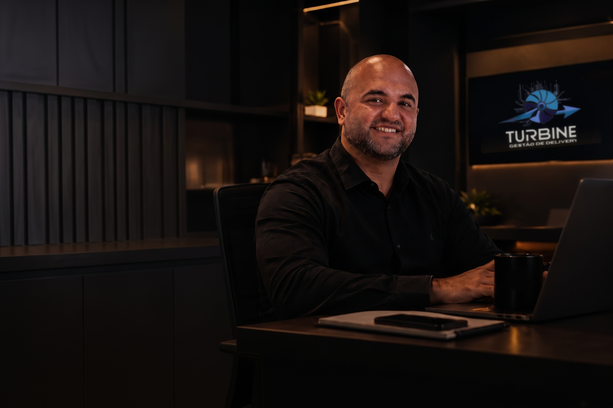
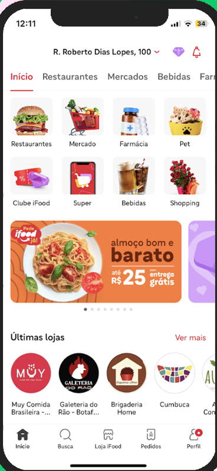

A Turbine Gestão Delivery assume a operação do seu cardápio nos principais aplicativos, otimizando preços, imagens, descrições, promoções e posicionamento para aumentar suas vendas.
Do cardápio às promoções, identificamos os pontos que prejudicam o desempenho da sua operação nos aplicativos de delivery.

Visibilidade baixa, posicionamento e oportunidades de exposição que podem estar sendo perdidas.
Investigue as causas dos cancelamentos e os pontos que precisam de correção na operação.
Entenda as reclamações recorrentes e onde a experiência do cliente precisa melhorar.
Fotos, descrições, preços e organização dos produtos influenciam diretamente a decisão de compra.
O PRIMEIRO PASSO É ENTENDER ONDE SUA OPERAÇÃO ESTÁ PERDENDO OPORTUNIDADES.
Você não está sozinho. Essa é a realidade de muitos restaurantes — e o ponto de partida para mudar esse cenário.
Muito trabalho, investimento e expectativa de crescer.
Os primeiros pedidos e a expectativa de conquistar clientes.
Concorrência, cancelamentos e vendas que não evoluem como esperado.
Gestão estratégica para cuidar dos detalhes do seu delivery enquanto você cuida do restaurante.
Cada restaurante tem seu público, ticket médio e raio de atendimento. Criamos um plano sob medida para sua cozinha vencer a concorrência local sem fórmulas prontas.
Nossa equipe respira aplicativos de delivery diariamente. Entendemos a fundo os algoritmos do iFood, KeeTa e 99Food e os segredos de indexação que a maioria desconhece.
Vender mais sem margem só traz estresse para a sua equipe. Nossos métodos garantem que o aumento de pedidos se converta em dinheiro real e previsível no caixa.
Você não perde mais horas criando promoções ou cadastrando itens. Cuidamos dos bastidores do delivery para você se dedicar à excelência dos pratos e ao salão.
Arraste para o lado →
Assinatura do contrato e coleta inicial de informações.
Implementação das primeiras estratégias em até 7 dias.
Monitoramento contínuo e ajustes semanais.
Período mínimo de 6 meses para resultados consistentes.
Restaurantes que implementaram nossa metodologia obtiveram aumento médio de 35% nas vendas e melhoria de 1.5 estrelas nas avaliações.
Aumento expressivo em vendas e avaliações.
Evolução sustentável do negócio.
Valor que se paga com o aumento das vendas.
Profissionais com mais de 5 anos de experiência no mercado de delivery.
Especialistas em métricas e otimização de resultados no iFood.
Profissionais focados na apresentação visual dos seus produtos.
Equipe exclusiva para atendimento personalizado ao seu negócio.
Diagnóstico inicial totalmente gratuito e sem compromisso.
Reunião objetiva para identificar oportunidades de crescimento.
Receba um plano personalizado em até uma semana.
Estamos prontos para esclarecer qualquer questão sobre nossos serviços.
Conte-nos os desafios específicos do seu negócio para soluções personalizadas.
O primeiro passo para revolucionar seu delivery começa agora.